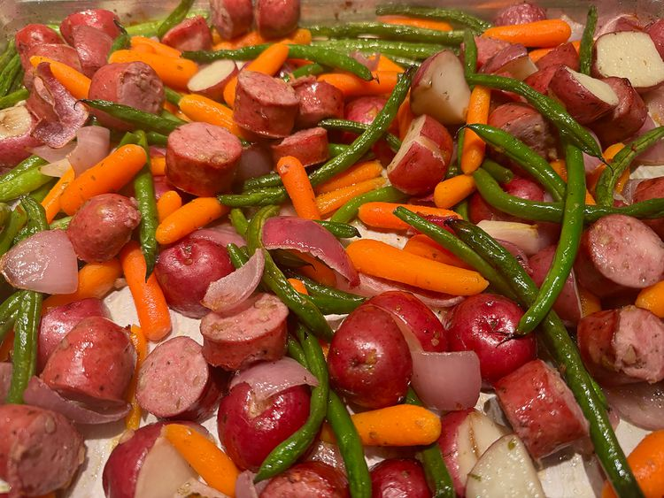

Recepies
Find and share everyday cooking inspiration on Allrecipes. Discover recipes, cooks, videos, and how-tos based on the food you love and the friends you follow.

Chicken Apple Sausage Sheet Pan Dinner
Ingredients- 1 pound red potatoes
- 1 pound carrots
- 1 medium red onion
- 1 pound green beans fresh
- 1/4 cup olive oil
- 1/2 teaspoon garlic salt, or to taste
- 1 teaspoon minced fresh rosemary
- 1 pound chicken and apple sausage, sliced

Ground Turkey Teriyaki Stir-Fry
Ingredients- 1/3 cup soy sauce
- 1/4 cup mirin
- 1/4 cup sake
- 3 cloves garlic minced
- 1 pound ground turkey
- 1 teaspoon cornstarch
- 2 1/2 cups cooked jasmine rice

Spicy Vegetable Beef Udon Noodles
Ingredients- 1 tablespoon dark soy sauce
- 1 1/2 tablespoons soy sauce
- 1 pound udon noodles
- 4 cloves garlic, minced
- 1/2 teaspoons sesame seeds
- 2 cups frozen stir-fry vegetables
- 1/2 pound rib eye steak, thinly sliced
Tuna Noodle Casserole
Ingredients- 2 cups milk
- 1 small white onion, minced
- 1 ½ cups chicken stock
- 2 tablespoons lemon juice
- 1 teaspoon Dijon mustard
- 1 cup frozen sweet peas
- 1 cup panko bread crumbs
Pie Crust Cookies
Ingredients- 1 premade pie crust
- 1 large egg
- 1 teaspoon whole milk
- 2 tablespoons granulated sugar
- 3/4 teaspoon ground cinnamon
- 1/8 teaspoon kosher salt
- 1 1/2 tablespoons unsalted butter, melted and cooled
3-Ingredient Baked Goat Cheese Dip
Ingredients- 1 (8 ounce) goat cheese log
- 2 cups marinara sauce
- ¼ teaspoon kosher or sea salt (optional)
- ¼ cup fresh basil, cut into ribbons